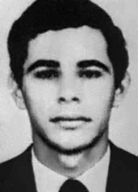

Arildo
Valadão
CIRCUNSTÂNCIAS DA MORTE
O Relatório Arroyo descreve o episódio que teria resultado na morte de Arildo Valadão, em 24 de novembro de 1973: “No dia 24, quando voltavam de um contato com a massa, os companheiros Ari, Raul e Jonas passaram próximo de uma grota. Ari e Raul se aproximaram da grota para melhor se orientar. Jonas ficou de guarda, perto das mochilas. Ouviu-se um tiro e Ari caiu. Em seguida, ouviram-se mais dois tiros. Raul correu. O Comando do destacamento BC, que também ouvira os tiros, enviou quatro companheiros para pesquisar o que teria havido. Logo adiante, esses companheiros encontraram o corpo de Ari sem a cabeça. Sua arma, um rifle 44, seu bornal e sua bússola tinham sido levados. As mochilas de Ari, Jonas e Raul estavam lá.”
O Relatório do Centro de Informações do Exército (CIE), do Ministério do Exército, confirma a morte do guerrilheiro em data aproximada, no dia 23 de novembro de 1973. Já o relatório do Ministério da Marinha, encaminhado ao ministro da Justiça Maurício Corrêa em 1993, assenta que Arildo teria morrido no dia 24 de novembro, contudo, afirmando que o ano seria 1974.
Os depoimentos ao MPF, em 2001, mencionados pelo livro “Dossiê Ditadura”, reiteram sua morte, conforme se observar a seguir. Sinézio Martins Ribeiro, que serviu como mateiro do Exército, afirmou que: O primeiro tiroteio do Exército foi no Pau Preto, onde foi morto o Ari; que o depoente estava presente; que Ari não atirou; que Ari teve sua cabeça cortada e levada para a base do Exército em Xambioá; que nesse dia só havia uma equipe de cinco soldados, o comandante era o Piau e os guias eram Iomar Galego, Raimundo Baixinho e o depoente; que a grota do Pau Preto fica dentro do castanhal do Almir Moraes; que isto se deu num encontro casual, que não viram piseiro, nem tiveram informações; que após a retirada da cabeça a colocaram num saco plástico e voltaram a pé, até a base do Paulista [Nemer Kouri], na beira do Xambioazinho, junto a OP-2; que a cabeça foi entregue ao Dr. César, do Exército.
Em artigo do jornalista Vasconcelos Quadros, publicado no jornal No Mínimo, em 20 de janeiro de 2005, o ex-guerrilheiro “Jonas” afirmou que também presenciou a morte de Ari no dia 24 de novembro de 1973, na região da Gameleira. Ele alega que o grupo de Arildo foi emboscado em uma Grota, e que este guerrilheiro morreu após ser atingido no tórax. Em seguida, teriam decapitado-no e amarrado suas mãos e pés em um pau.
The Arroyo Report describes the episode that would have resulted in the death of Arildo Valadão, on November 24, 1973: "On the 24th, when they were returning from contact with the masses, the companions Ari, Raul and Jonas passed close to a cave. Ari and Raul approached the cave to better orient themselves. Jonas stood guard, near the backpacks. A shot was heard and Ari fell. Then, two more shots were heard. Raul The BC detachment command, who had also heard the shots, sent four companions to investigate what had happened. Soon, these companions found Ari's body without his head.
The Report from the Army Information Center (CIE), from the Ministry of the Army, confirms the guerrilla's death on an approximate date, on November 23, 1973. The report from the Ministry of the Navy, sent to the Minister of Justice Maurício Corrêa in 1993, states that Arildo died on November 24, however, stating that the year would be 1974.
The statements to the MPF, in 2001, mentioned in the book “Dossiê Ditadura”, reiterate his death, as seen below. Sinézio Martins Ribeiro, who served as an Army bushman, stated that: The Army's first shooting was in Pau Preto, where Ari was killed; that the deponent was present; that Ari didn't shoot; that Ari had his head cut off and taken to the Army base in Xambioá; that on that day there was only a team of five soldiers, the commander was Piau and the guides were Iomar Galego, Raimundo Baixinho and the deponent; that the Pau Preto cave is inside the Almir Moraes chestnut forest; that this happened in a chance meeting, that they did not see a piseiro, nor did they have any information; that after removing the head, they placed it in a plastic bag and returned on foot, to the base of Paulista [Nemer Kouri], on the edge of Xambioazinho, next to OP-2; that the head was handed over to Dr. César, from the Army.
In an article by journalist Vasconcelos Quadros, published in the newspaper No Mínimo, on January 20, 2005, the former guerrilla “Jonas” stated that he also witnessed Ari's death on November 24, 1973, in the Gameleira region. He claims that Arildo's group was ambushed in a Grota, and that this guerrilla died after being shot in the chest. Then they would have decapitated him and tied his hands and feet to a stick.
El Informe Arroyo describe el episodio que habría resultado en la muerte de Arildo Valadão, el 24 de noviembre de 1973: "El día 24, cuando regresaban del contacto con las masas, los compañeros Ari, Raúl y Jonás pasaron cerca de una cueva. Ari y Raúl se acercaron a la cueva para orientarse mejor. Jonás hizo guardia, cerca de las mochilas. Se escuchó un disparo y Ari cayó. Luego, se escucharon dos disparos más. Raúl El El comando del destacamento BC, que también había oído los disparos, envió a cuatro compañeros para investigar lo sucedido. Pronto, estos compañeros encontraron el cuerpo de Ari sin cabeza.
El Informe del Centro de Información del Ejército (CIE), del Ministerio del Ejército, confirma la muerte del guerrillero en fecha aproximada, el 23 de noviembre de 1973. El informe del Ministerio de la Marina, enviado al Ministro de Justicia Maurício Corrêa en 1993, afirma que Arildo murió el 24 de noviembre, sin embargo, indica que el año sería 1974.
Las declaraciones al MPF, en 2001, mencionadas en el libro “Dossiê Ditadura”, reiteran su muerte, como se ve a continuación. Sinézio Martins Ribeiro, que sirvió como bosquimano del ejército, afirmó que: El primer tiroteo del ejército fue en Pau Preto, donde Ari fue asesinado; que el declarante estuvo presente; que Ari no disparó; que a Ari le cortaron la cabeza y lo llevaron a la base del Ejército en Xambioá; que ese día sólo había un equipo de cinco soldados, el comandante era Piau y los guías eran Iomar Galego, Raimundo Baixinho y el declarante; que la cueva de Pau Preto está dentro del bosque de castaños de Almir Moraes; que esto ocurrió en un encuentro casual, que no vieron ningún piseiro, ni tenían ninguna información; que después de quitarle la cabeza, la metieron en una bolsa de plástico y regresaron a pie, a la base de Paulista [Nemer Kouri], en el límite de Xambioazinho, junto a la OP-2; que la cabeza fue entregada al doctor César, del Ejército.
En un artículo del periodista Vasconcelos Quadros, publicado en el diario No Mínimo, el 20 de enero de 2005, el ex guerrillero “Jonas” afirmó que él también presenció la muerte de Ari el 24 de noviembre de 1973, en la región de Gameleira. Afirma que el grupo de Arildo fue emboscado en una Grota, y que este guerrillero murió tras recibir un disparo en el pecho. Luego lo habrían decapitado y atado de pies y manos a un palo.